<ion-split-pane [when]="isVisible">
    <div class="menu-container">
        <div class="logo-container">
            
        </div>
        <div class="avatar-container">
            <avatar [avatarUrl]="avatarObs | async" [isClickable]="true"></avatar>
        </div>
        <div>
            <button (click)="openAddCommitDialog()" class="tab">
                
                <p class="tab-text">{{ contribute.pagName | translate }}</p>
            </button>
        </div>
        <div *ngFor="let page of menuArray">
            <button (click)="goTo(page.url)" [ngClass]="page.url === currentPage ? 'tab tab__selected' : 'tab'">
                
                <p class="tab-text">{{ page.pagName | translate }}</p>
            </button>
        </div>
        <div class="logout">
            <ion-fab item-right vertical="top" horizontal="end" slot="fixed" class="fab-button">
                <button ion-fab class="share-button">
                    <ion-icon name="share"></ion-icon>
                </button>
                <ion-fab-list side="right">
                    <linkedin-share url="{{ 'social.url' | translate }}" class="social-button"></linkedin-share>
                    <tweet url="{{ 'social.url' | translate }}"  text="{{ 'social.generalShareText' | translate }}" class="social-button tweet"></tweet>
                    <fb-like url="{{ 'social.url' | translate }}" class="social-button"></fb-like>
                </ion-fab-list>
            </ion-fab>
            <button class="tab" (click)="logout()">
                
            </button>
        </div>
    </div>
    <ion-nav [root]="currentPage" main></ion-nav>
</ion-split-pane>